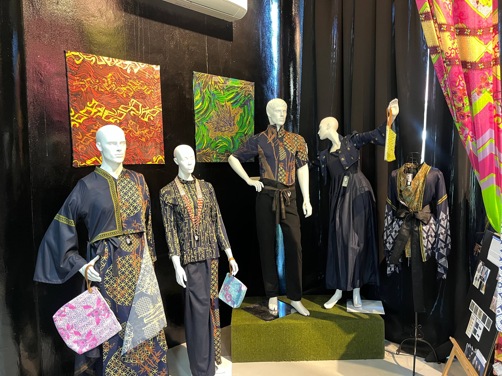
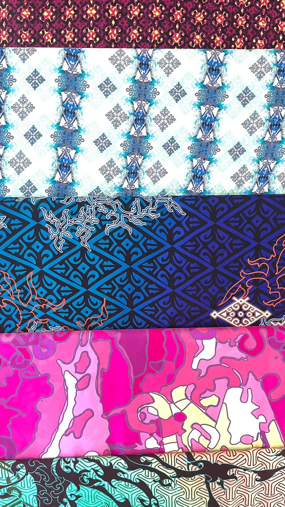
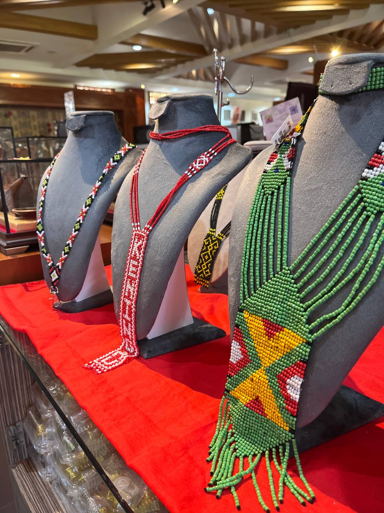
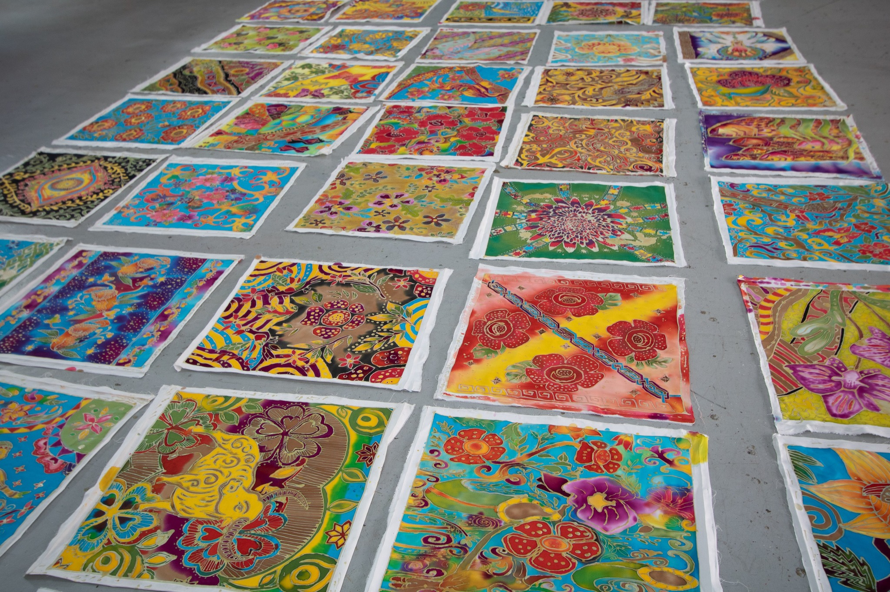
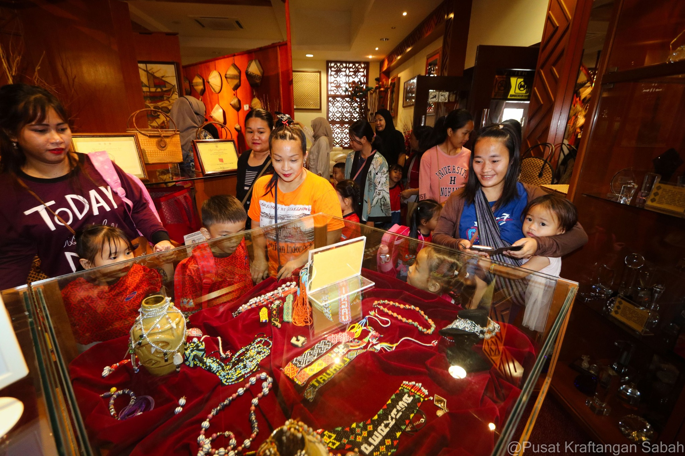
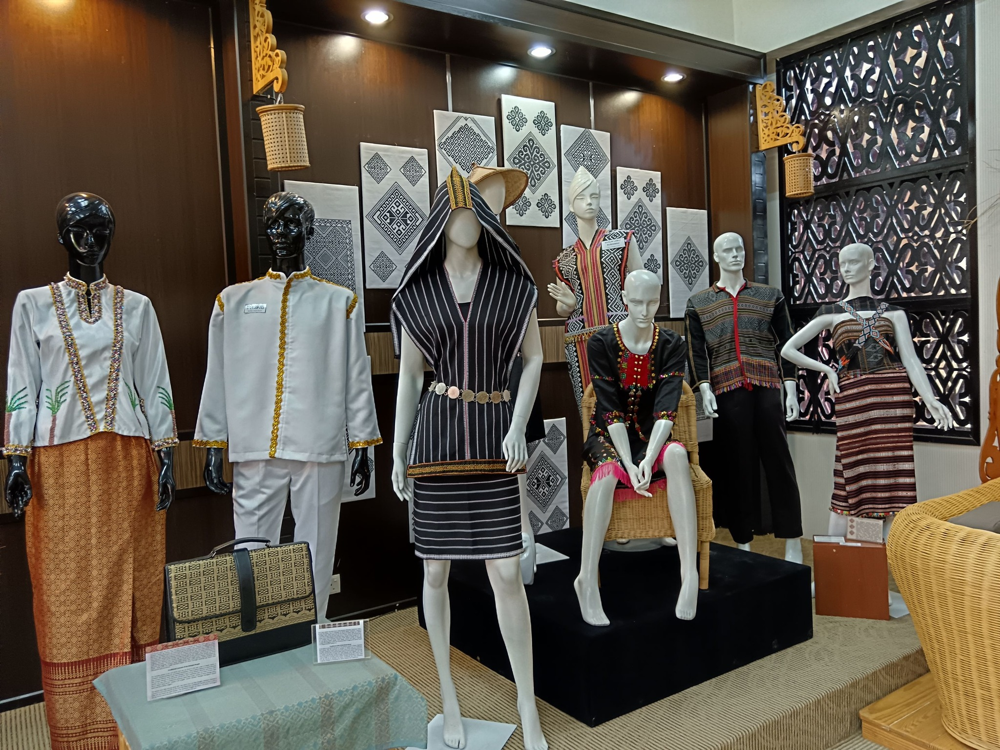

At Pusat Kraftangan Sabah, every handicraft represents the cultural identity and artistic traditions of Sabah. Skilled artisans transform natural materials such as bamboo, rattan, and textiles into beautiful works of art that reflect generations of heritage and creativity.
Visitors can explore unique handmade products including batik, woven baskets, traditional ornaments, and creative souvenirs that celebrate the beauty of Sabahan craftsmanship.

Traditional batik patterns inspired by Sabah’s culture.

Beautifully woven rattan handicrafts made by skilled artisans.

Handcrafted bamboo products reflecting Sabahan heritage.

Traditional textile designs blended with modern creativity.

Unique handmade souvenirs popular among visitors.

Authentic crafts that showcase the beauty of local artistry.